내실
내실이란?
내실이란 원정대 단위로 적용되는 캐릭터 스펙업 요소입니다. 퀘스트, 수집형 포인트, 던전 클리어 보상 등으로 획득할 수 있습니다.
캐릭터 스펙에 직접적인 영향이 없는 단순한 수집 요소(ex. 모코코)도 내실이라 부르지만, 이 문서에서는 캐릭터 스펙에 직접적으로 영향을 주는 요소들만 다루도록 하겠습니다.
내실은 캐릭터 스펙에 가장 기본이 되는 요소이며, 골드로 구매가 불가능하기 때문에 시간을 들여서 직접 작업을 진행해야 합니다.
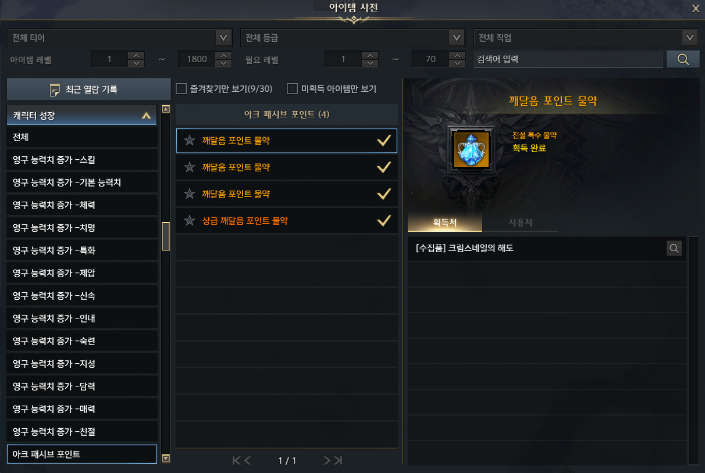
게임 내 아이템 사전(Alt + D)을 통해 내실 관련 획득 정보를 쉽게 확인할 수 있습니다.
내실 우선 순위
내실 우선 순위는
1. 아크 패시브 포인트
2. 스킬 포인트
3. 룬
4. 영구 능력치 증가 치명 / 특화 / 신속
5. 카드
6. 펫목장
7. 영구 능력치 증가 기본 능력치
8. 영구 능력치 증가 체력
다만, 직업에 따라 '풍요' 룬이 필수인 경우가 있습니다. 이 경우 풍요 룬을 우선으로 작업하는 것이 좋습니다.
제압/인내/신속 능력치 및 성향 포인트(지성, 담력, 매력, 친절)는 캐릭터 스펙에 큰 영향을 주지 않습니다.
평판 우선 순위
1 '끝나지 않은 싸움' 아크 패시브 포인트
2 '지혜의 섬 보조 사서' 스킬 포인트
내실 관련 에포나 평판은 2개만 하시면 됩니다. 나머지는 아크라시아 투어 보상으로 자동 완료됩니다.
아크라시아 투어
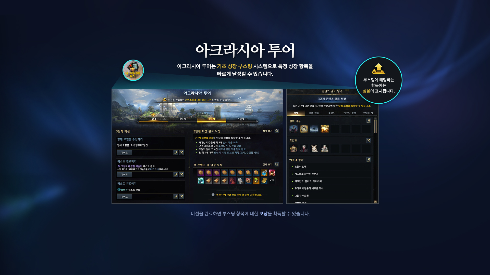
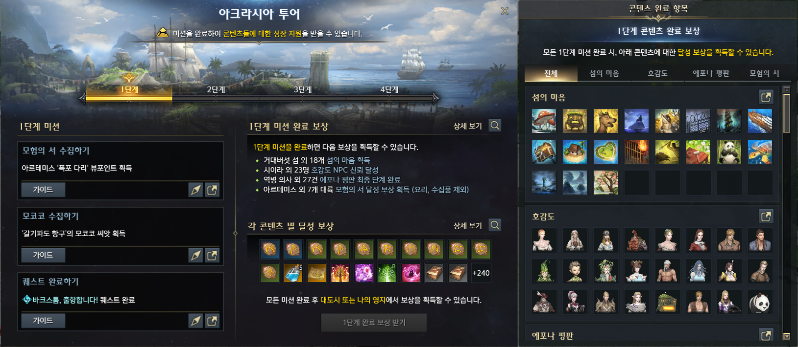
아크라시아 투어는 원정대 단위로 저티어 내실을 간단한 퀘스트와 수집을 통해 스킵해주는 시스템이며, 일종의 내실 점핑이라고 볼 수 있습니다.
총 4단계로 구성되어 있으며, 간단한 퀘스트만으로 파푸니카까지의 내실 보상을 받을 수 있으므로 가장 먼저 진행해야 합니다.
아크라시아 투어로 전체 혹은 일부 획득 가능한 내실 요소들은 배경색을 노란색으로 따로 표시해두었습니다.
아크 패시브 포인트
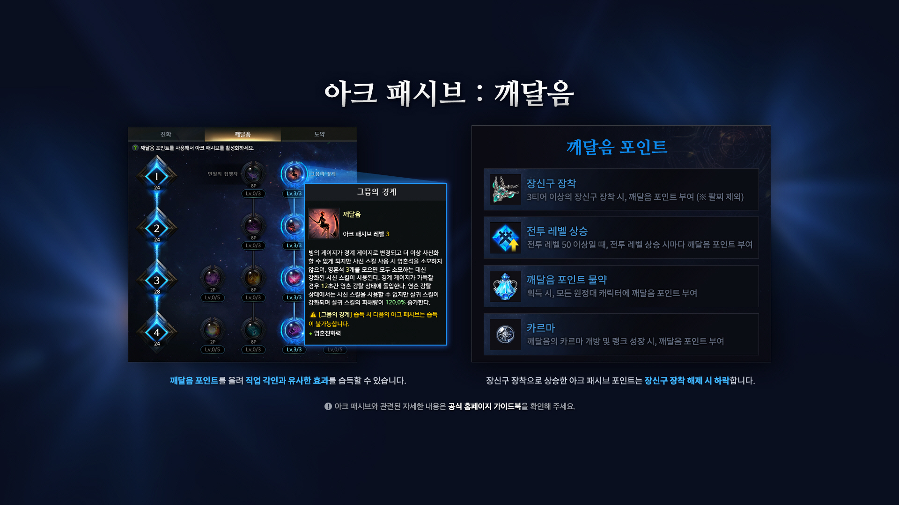
아크 패시브 중 '깨달음' 관련 포인트를 내실로 획득할 수 있습니다. 깨달음 노드 4티어를 찍기 위해 반드시 최우선적으로 모아야 하는 포인트입니다.
에포나 평판
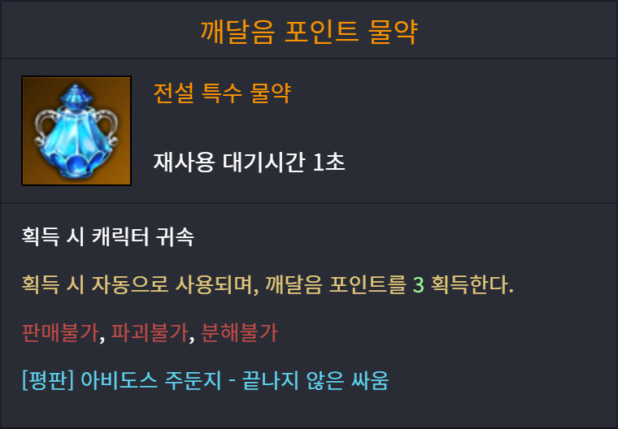
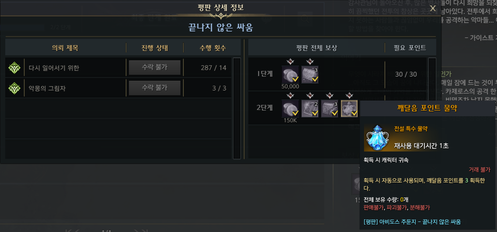
에포나 평판 보상으로 얻을 수 있습니다.
에포나 의뢰 창에서 평판 현황 → 평판 보상 → 깨달음 포인트 물약 검색 시 확인할 수 있습니다.
완료까지 16일이 걸리므로 미리 시작해야 합니다.
첫 번째 의뢰인 '악몽의 그림자'가 끝나는 날은 두 번째 의뢰를 바로 이어서 수행 가능합니다. 그날 두 번 깨서 수행 횟수를 늘려야 총 16일차에 획득할 수 있습니다.
모험의 서
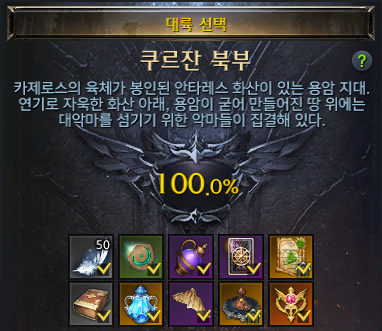
모험의 서 쿠르잔 북부 70% 보상으로 획득 가능합니다. 모험의 서 공략은 검색을 통해 쉽게 찾을 수 있습니다.
80% 보상인 해도 조각도 다음 깨달음 포인트 물약 획득 과정에 필요하므로, 쿠르잔 북부 모험의 서 80% 달성을 목표로 하는 것이 좋습니다.
필드 보스
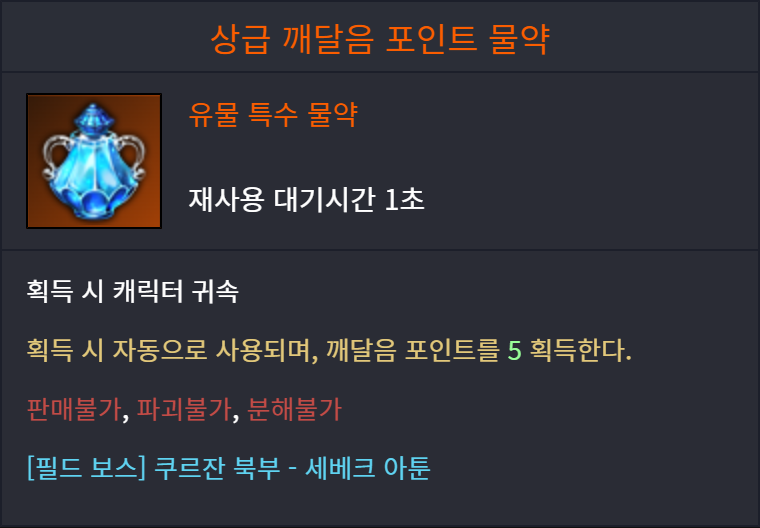
쿠르잔 북부 필드 보스 세베크 아툰을 잡아 얻을 수 있습니다.
확률로 드랍하며, 보이지 않는 천장(18회)이 존재하기 때문에 꾸준히 잡다 보면 반드시 획득할 수 있습니다.
크림스네일의 해도
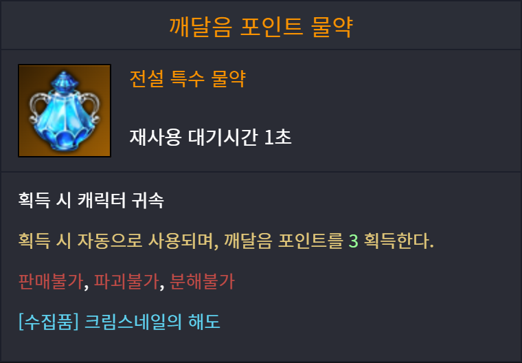
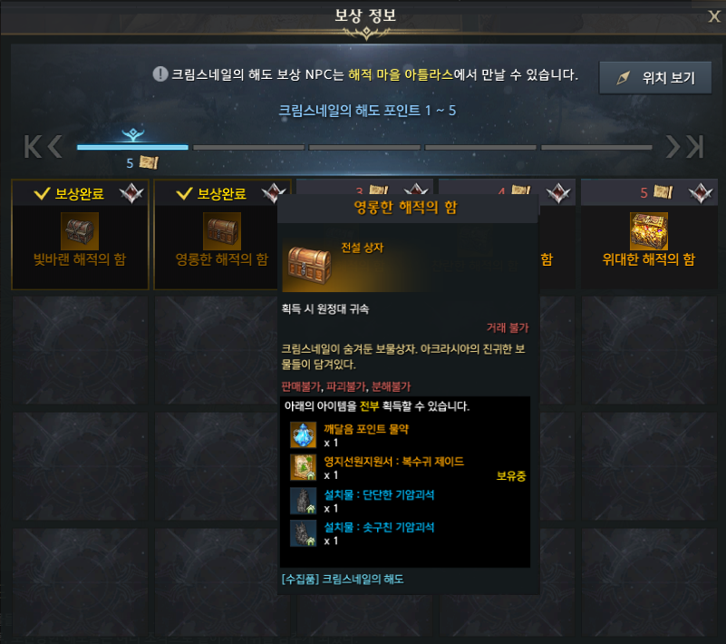
크림스네일의 해도 '2포인트' 보상으로 획득 가능합니다. '두 번째 해도' 보상이 아니라 해도 2개를 모두 모았을 때 받는 보상입니다.
첫번째 해도
1. 쿠르잔 북부의 모험의 서를 80% 이상 달성하기
2. 쿠르잔 북부의 필드 보스 세베크 아툰을 처치하여 일정 확률로 획득
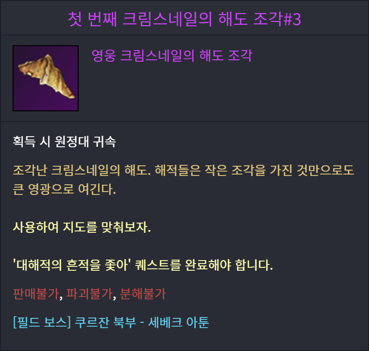
3. 쿠르잔 남부의 작살아귀 헌팅 길드선에서 판매하는 오래된 빈병에서 일정 확률로 획득
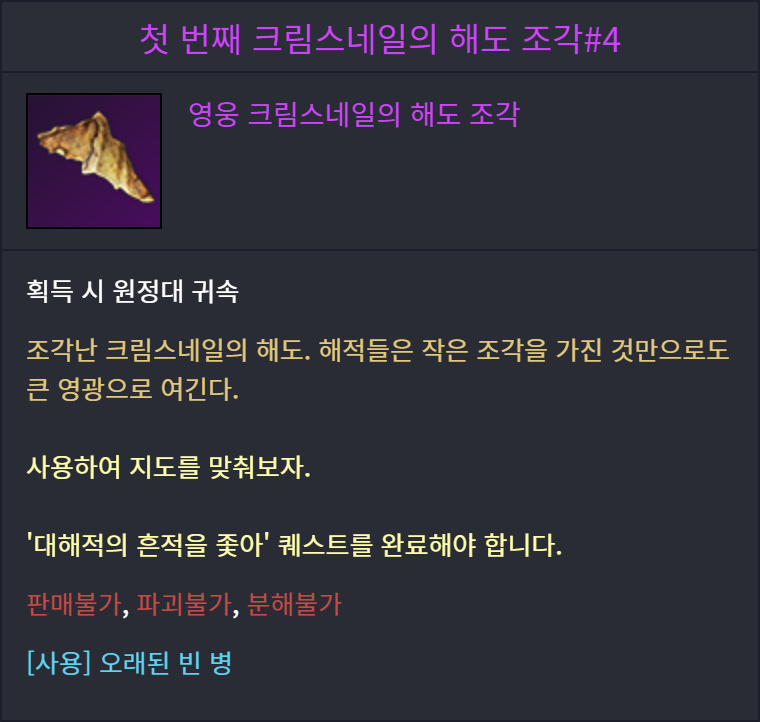
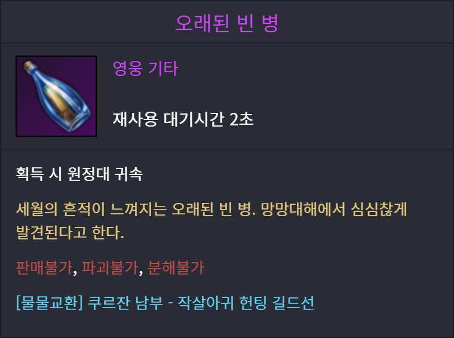
해적 주화 4,000개로 교환 가능합니다. 확률이 낮아 해적 주화가 많이 필요할 수 있습니다.
4. 쿠르잔 남부의 작살아귀 헌팅 길드선에서 물물 교환으로 획득
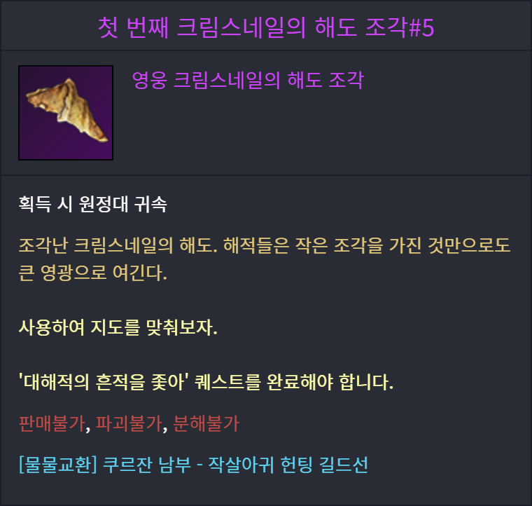
해적 주화 100,000개로 교환 가능합니다.
두번째 해도
1. 림레이크 남섬에 있는 긴과 호감도 쌓기
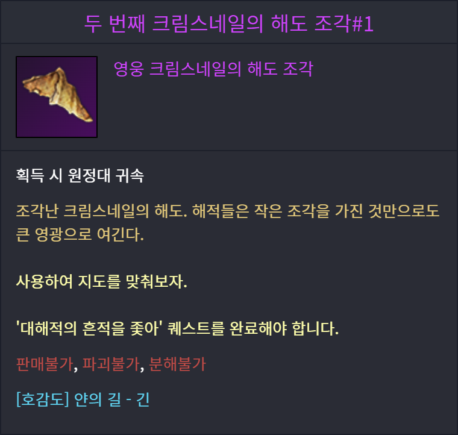
긴 호감도 신뢰 보상으로 얻을 수 있습니다.
2. 루테란의 왕실 무역선에서 물물 교환으로 획득
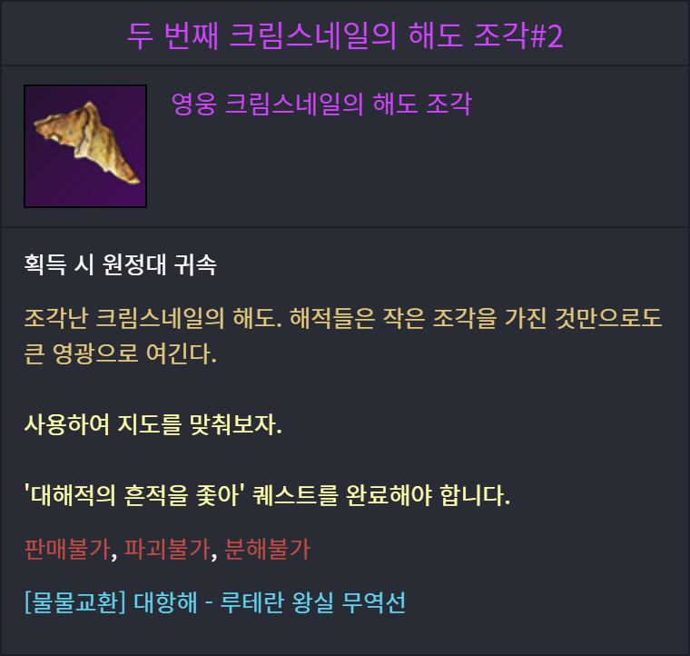
루테란 왕실 무역선에서 해적 주화 100,000개로 구매 가능합니다.
➡️ 두번째 해도 2번 조각 루테란 왕실 무역선 정보 로스트아크 에펨코리아 이 글을 참고하여 구매하면 됩니다.
3. 림레이크 남섬의 에포나 의뢰 평판 쌓기
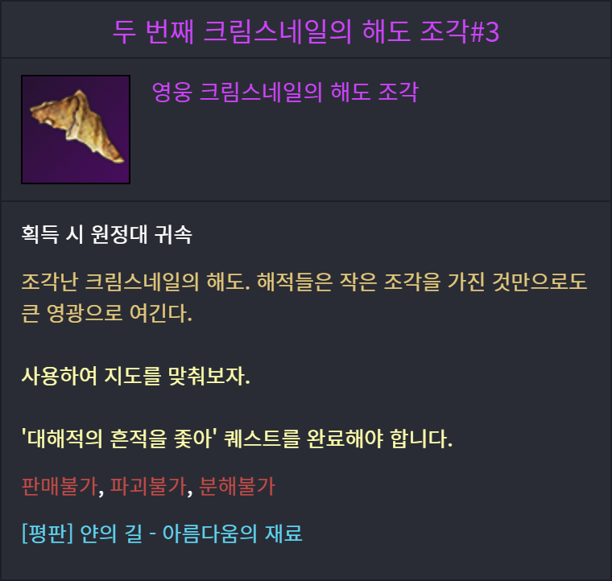
림레이크 남부 에포나 의뢰 평판 보상으로 획득 가능하며, 14일이 필요합니다.
4. 에브니 큐브 해금 이상 난이도의 몬스터들을 처치하여 일정 확률로 획득
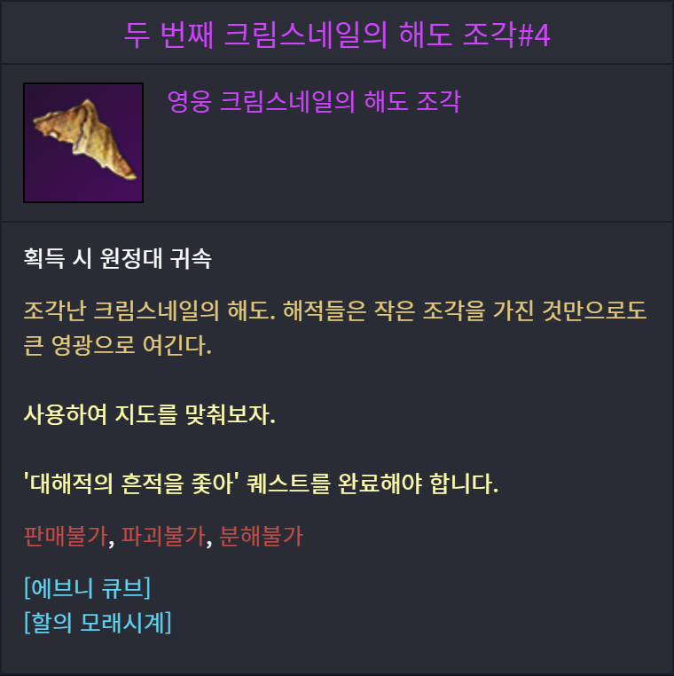
큐브에서 획득 가능합니다. 럭키방 등장시 확정 드랍됩니다.
5. 원정대 영지의 일반 파견에서 일정 확률로 획득
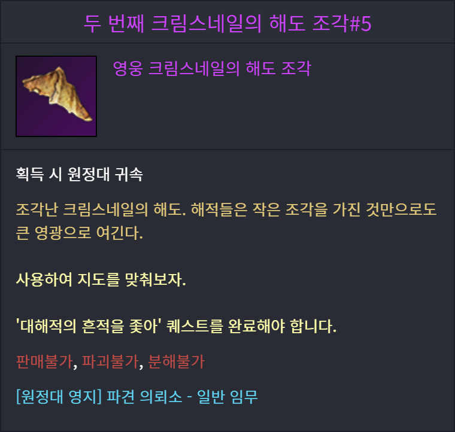
원정대 영지 일반 파견 보상으로 획득가능합니다.
스킬 포인트
스킬 포인트는 모험의 서, 일반 퀘스트, 필드보스, 거인의 심장, 에포나 평판, 섬의 마음, 이그네아의 징표, 오르페우스의 별 콘텐츠에서 획득 가능합니다.
총 31가지가 있으며, 아이템 사전(Alt + D)을 통해 확인하면 편리합니다.
아크라시아 투어 완료시 거의 대부분의 스킬포인트를 획득 가능하니 아크라시아 투어를 먼저 진행해주세요.
모험의 서
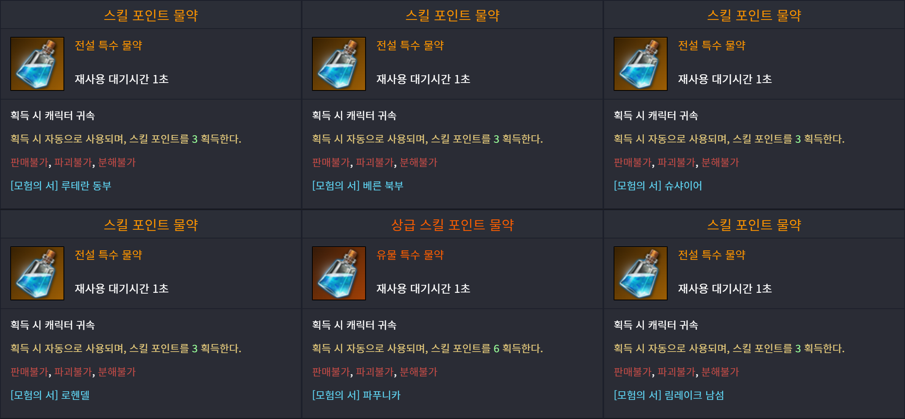
루테란 동부 / 베른 북부 / 슈샤이어 / 로헨델 / 파푸니카 / 림레이크 남섬 모험의 서에서 획득 가능합니다.
아크라시아 투어에서 앞의 4개 대륙 보상을 지급합니다. 파푸니카 대륙은 직접 보상을 주지는 않지만 호감도/요리/수집품을 제외한 것들을 다 채워줍니다.
따라서 사실상 림레이크 남섬만 직접 달성하면 됩니다.
필드보스
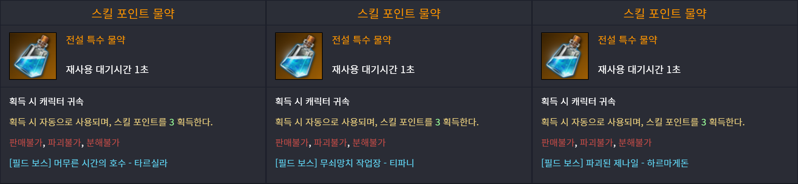
필드보스를 잡아 스킬포인트 물약을 얻을 수 있습니다.
대부분 아크라시아 투어 완료 시 자동으로 받을 수 있습니다.
일반 퀘스트
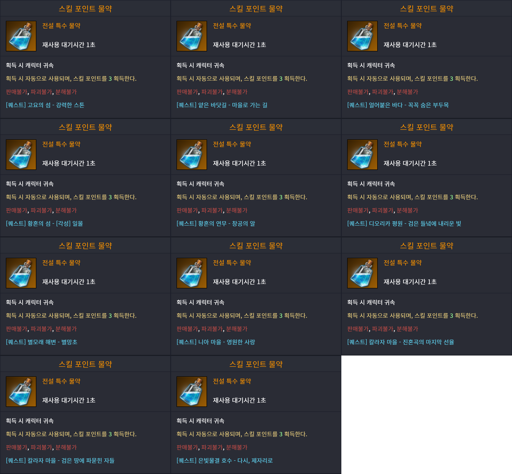
일반 퀘스트 보상으로 스킬 포인트 물약을 주는 경우가 있습니다.
점핑권을 사용했다면 대부분의 일반 퀘스트가 자동으로 클리어되기 때문에 따로 진행할 필요는 없습니다.
아이템 사전을 확인하여 혹시 미완료 퀘스트가 있다면 진행하시면 됩니다.
거인의 심장
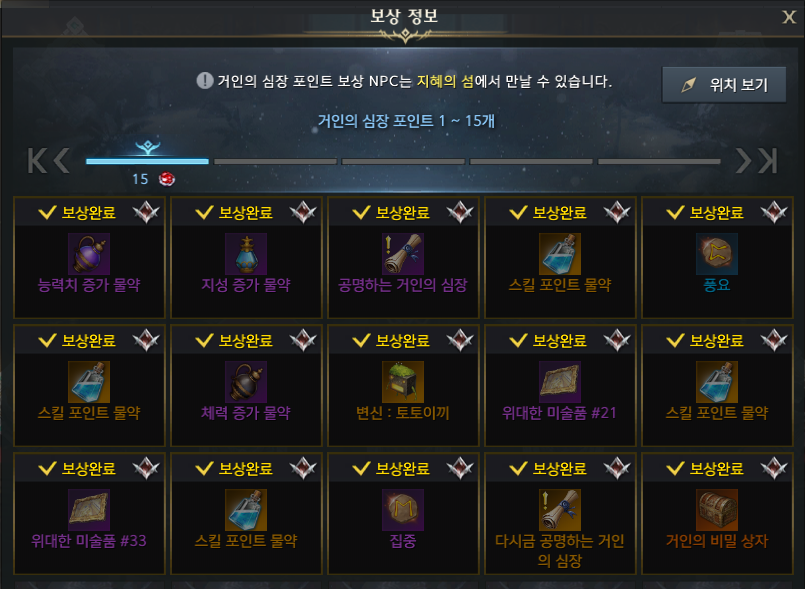
4개의 스킬 포인트 물약을 획득 가능합니다.
거인의 심장은 아크라시아 투어 완료 시 호감도 보상 3개와 마지막 퀘스트 보상 1개를 제외한 11개를 보상으로 받을 수 있습니다.
따라서 호감도로 하나만 더 수집하면 됩니다.
로스트아크는 스토리 진행 중 특정 NPC의 호감도 진행이 불가능한 경우 해당 NPC의 호감도를 신뢰로 만들어주는 시스템이 있습니다.
아만, 진저웨일, 베아트리스 등이 있는데 이 중에서 베아트리스의 경우 카제로스 전조 퀘스트 진행 중에 행방불명 되면서 호감도 진행이 불가능해지는 구간이 있습니다
이때 호감도 창에서 신뢰 등급까지 보상을 모두 받을 수 있는데 이를 활용해서 거인의 심장을 수집할 수 있습니다.
카제로스 전조 퀘스트는 1660 레벨부터 진행이 가능합니다.
에포나 평판
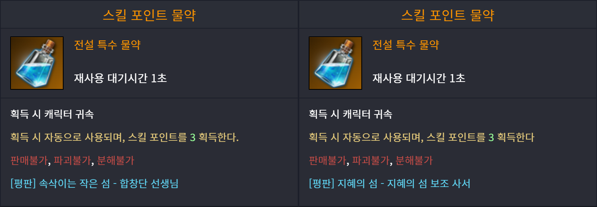
평판 보상으로 2개를 받을 수 있습니다.
1개는 아크라시아 투어 보상으로 획득 가능하므로 1개만 추가로 진행하면 됩니다.
지혜의 섬에서 수행 가능한 에포나 의뢰 '지혜의 섬 보조 사서'를 수행해야 합니다.
첫 번째 의뢰가 끝나는 날 바로 두 번째 의뢰가 가능하므로, 그날은 2번 수행이 가능합니다. 총 13일이 필요합니다.
섬의 마음
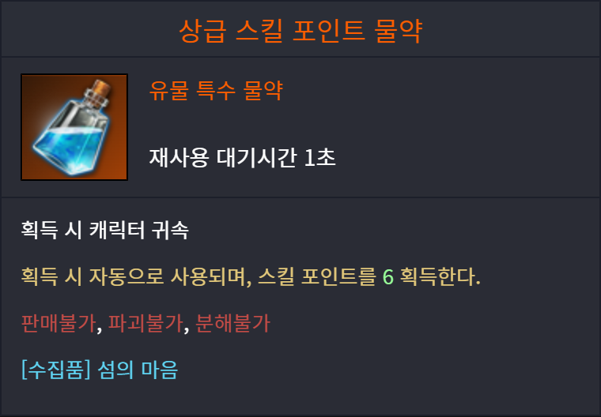
섬의 마음 20개 보상으로 획득이 가능합니다. 아크라시아 투어 완료 시 20개 이상의 섬의 마음을 제공하므로 자동으로 습득됩니다.
이그네아의 징표
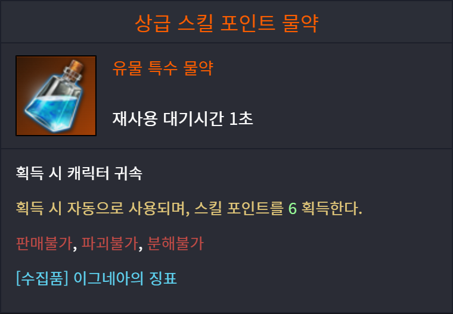
이그네아의 징표는 각 대륙별 모험의 서를 100% 달성 시 획득이 가능합니다.
모험의 서의 경우 아크라시아 투어 완료 시 100%를 달성해주지는 않기 때문에 따로 작업해야 합니다.
호감도/요리/수집품 3가지를 직접 수행해야 하며, 대륙별 난이도가 다르기 때문에 쉬운 대륙 위주로 작업하는 것이 좋습니다.
참고로 9개 보상인 비프로스트 열쇠도 매우 중요하므로, 하는 김에 9개까지 달성하는 것이 좋습니다.
➡️ 뉴비를 위한 이그네아 징표작 대륙 추천 | 로아 인벤
이 글 참고하시면 좋을것 같습니다.
오르페우스의 별
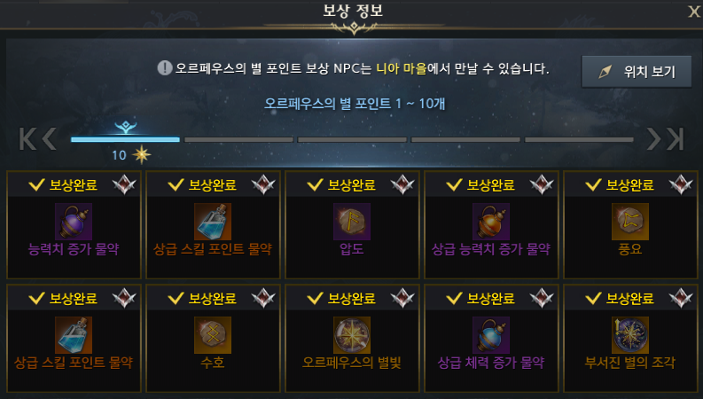
오르페우스의 별 2개, 6개 보상에 스킬포인트 물약이 있습니다.
아크라시아 투어 보상으로 오르페우스의 별 6개를 지급하므로, 스킬 포인트 물약을 얻기 위해 따로 오르페우스의 별을 모을 필요는 없습니다.
스킬 룬
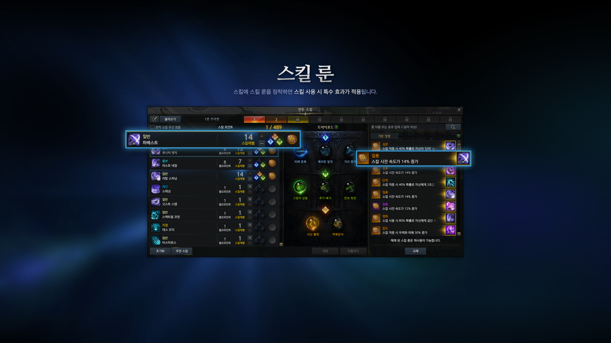
스킬 룬은 원하는 스킬에 장착하여 해당 스킬 사용 시 더욱 강력한 효과를 얻을 수 있는 시스템입니다.
질풍
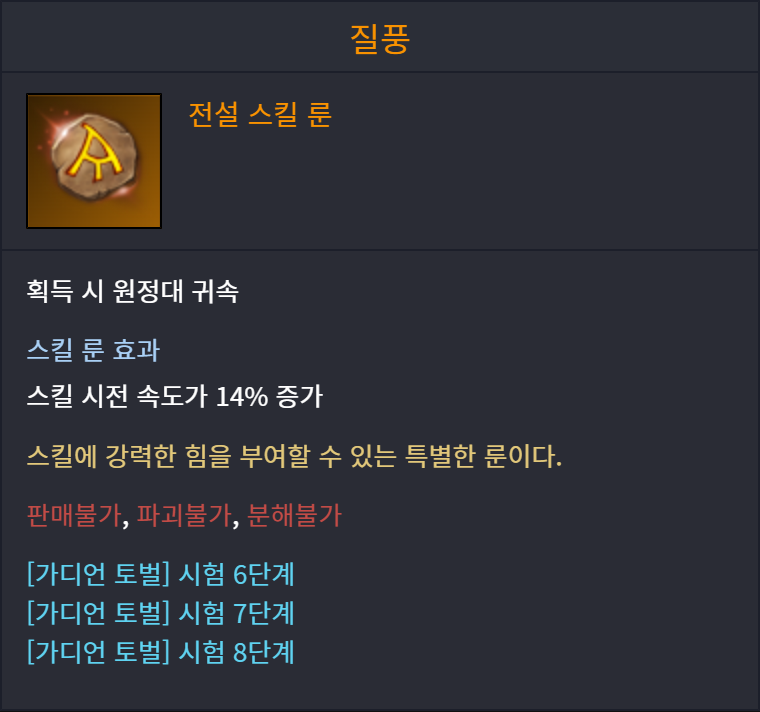
스킬 시전 속도를 올려주는 룬입니다.
'공격 속도'가 아니라 '시전 속도'입니다. 공격 속도는 140% 제한이 있지만, 시전 속도는 스킬 프레임 자체를 줄여주기 때문에 140% 제한 없이 적용됩니다.
스킬 모션이 긴 스킬에 착용합니다.
가디언 토벌에서 획득 가능합니다.
풍요
스킬 적중 시 아이덴티티 게이지 획득량을 증가시켜주는 룬입니다.
아덴(아이덴티티) 캐릭터라면 필수입니다. 일부 직업은 풍요 룬이 없으면 스킬 사이클 자체가 안 굴러가는 경우가 있으니 그런 경우 최우선으로 작업해야 합니다.
오르페우스의 별
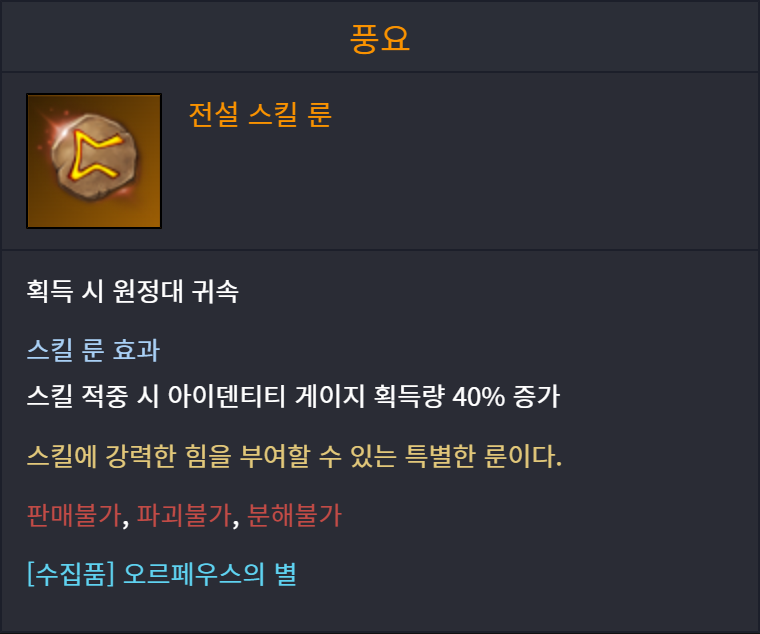
5개 보상에서 획득 가능하며, 아크라시아 투어 보상으로 받을 수 있습니다.
블루홀
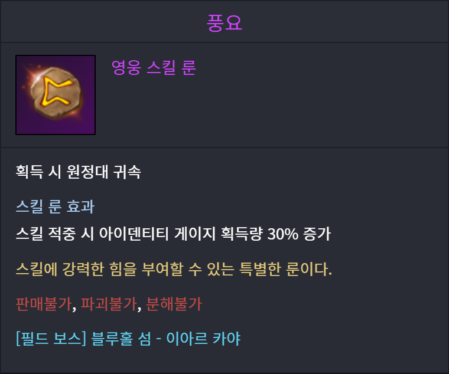
캘린더 섬인 블루홀 섬에서 획득 가능합니다.
인게임에서 Alt + H 를 누르면 캘린더가 열리는데 여기서 섬 스케쥴을 확인할 수 있습니다. 미리 블루홀 섬이 나오는 날을 체크해두시면 좋습니다.
항해 모험물
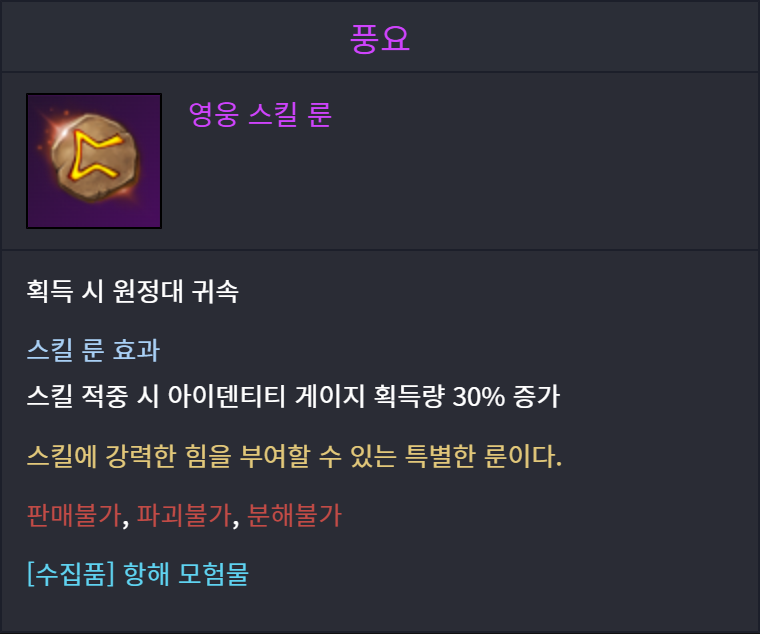
모험물 34개 보상으로 얻을 수 있습니다. 아크라시아 투어 완료 시 20개 정도를 주므로 14개를 더 모아야 합니다.
항해 협동은 가장 나중으로 미루고 영지 교환/호감도 위주로 모으는 것이 좋습니다.
영지 교환
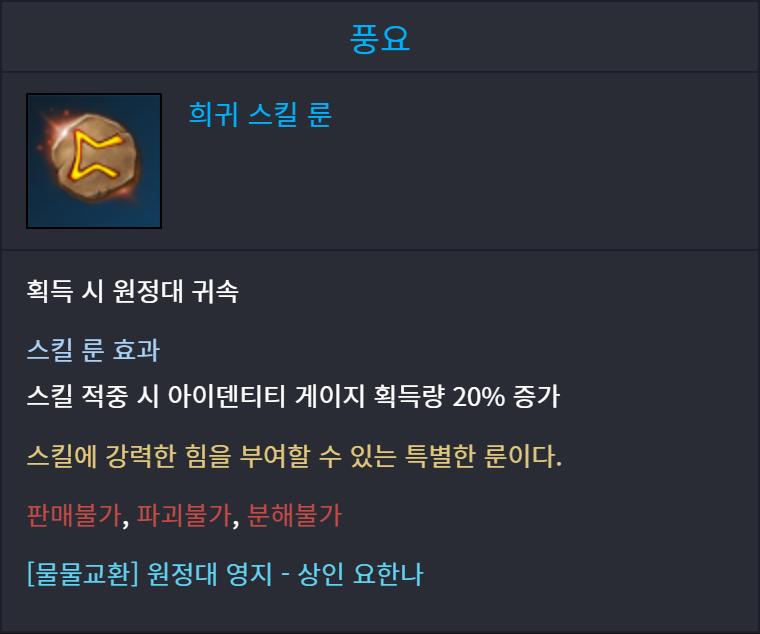
희귀까지 쓰는 경우는 많이 없고 있더라도 아크라시아 투어 보상으로 2개를 주니까 이것까지 필요한 경우는 많이 없는데 필요한 경우
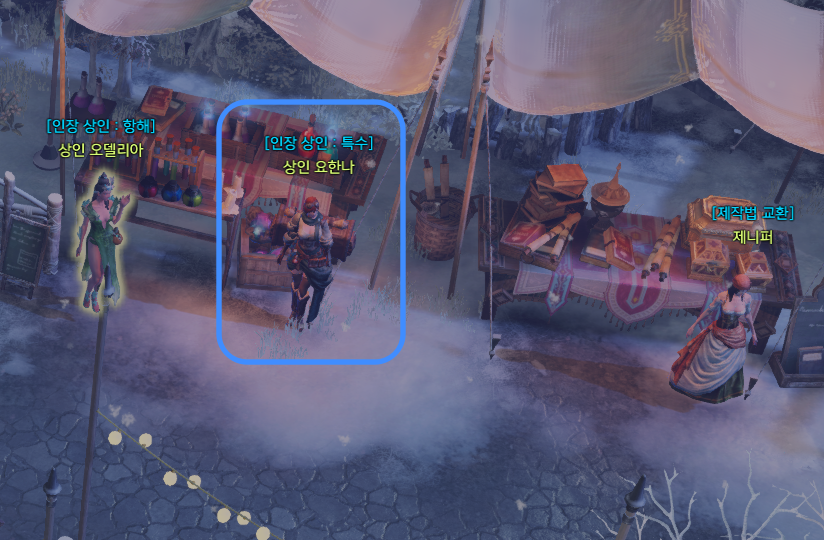
영지에서 얘한테 사시면 됩니다.
중독/출혈
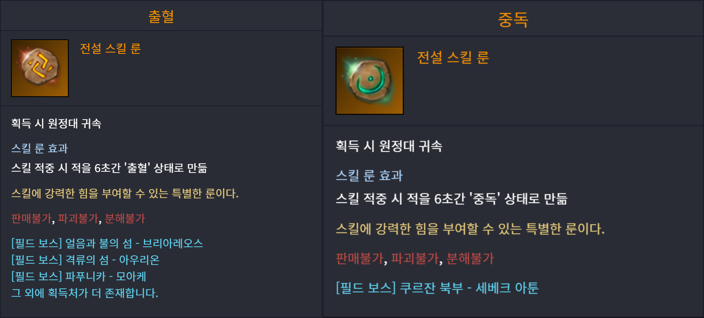
필드 보스에서 획득 가능합니다. 직업마다 다른데 딜지분 1~2% 나옵니다.
쿨타임 짧은스킬에 주로 사용합니다.
정화
스킬 사용 시 해로운 효과 1개를 제거합니다. 영웅 등급은 70% 전설 등급은 80% 확률로 발동합니다.
상태이상이 있는 던전에서 많이 사용합니다.
이그네아의 징표
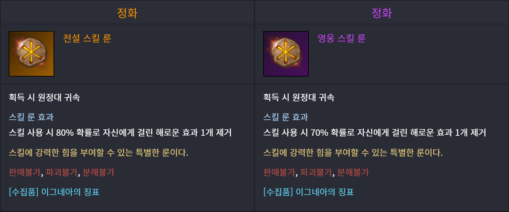
전설은 이그네아 15개 보상인데 쉽지 않습니다. 화이팅
영웅은 5개인데 보통 스킬 포인트 작업하면서 획득 가능합니다.
압도
무력화 피해를 증가시켜주는 룬입니다. 기믹에 무력화가 많이 요구되는 레이드에서 많이 사용합니다.
비탄의 섬
비탄의 섬 보상으로 얻을 수 있습니다. 비탄의섬의 경우 오르페우스의 별과 섬의 마음을 아크라시아 투어에서 주기 때문에 압도만 먹고 치우시는걸 추천드립니다.
영지 교환
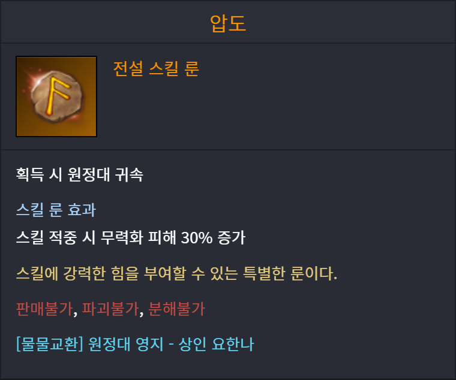
영지에서 구매 가능합니다.
오르페우스의 별
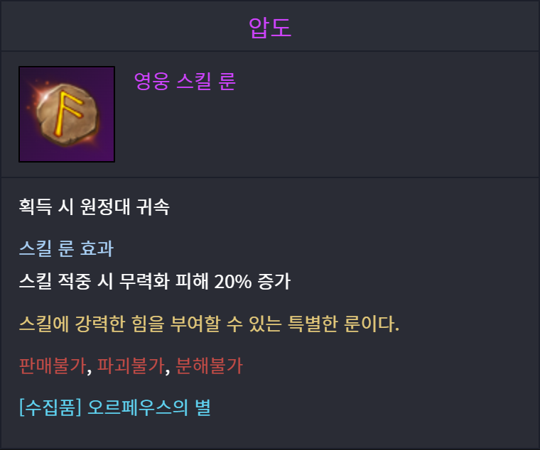
오르페우스의 별 3개 보상에 있습니다. 아크라시아 투어에서 자동으로 받아집니다.
모험의 서
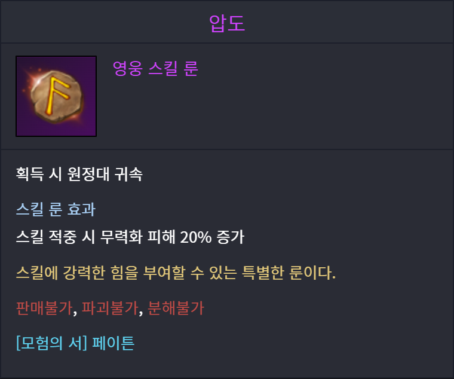
페이튼 모험의 서 보상입니다. 아크라시아 투어 보상으로 획득 가능합니다.
단죄/심판
세트로 사용하는 룬입니다. 단죄 발동 → 심판 발동 순서로 작동하는 세트 룬입니다.
단죄는 심판 발동 역할만 하고, 심판은 발동 시 쿨타임 감소와 전투 자원 회복량 증가 효과가 있습니다.
쿨타임 감소 효과는 '현재 쿨이 돌고 있는 스킬'이 아니라 '단심 발동 후에 사용하는 스킬'에 적용되므로 사이클 맨 처음에 사용해야 합니다.
공격 시 확률적으로 발동하며, 타수마다 발동 기회가 있기 때문에 다단히트 스킬에 착용하는 것이 좋습니다.
전설 등급
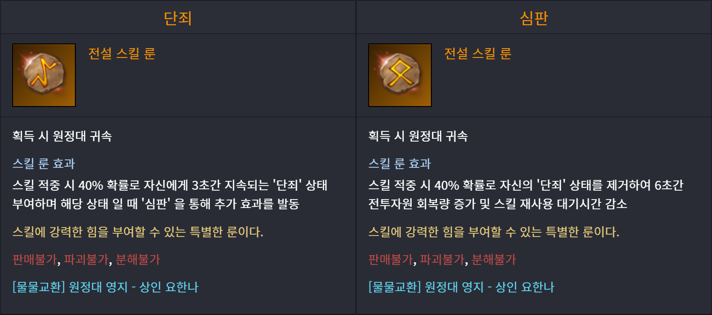
영지에서 54,000개로 구매 가능합니다. 등급이 높을수록 발동확률이 높아서 사실 이것만 사시면 됩니다.
영웅 등급
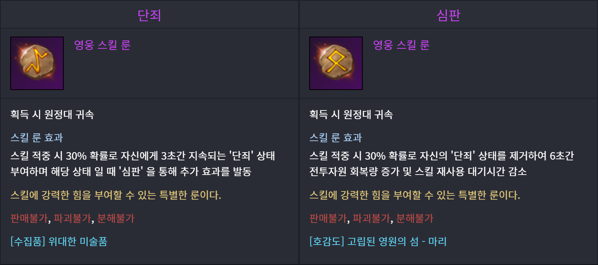
미술품은 24개 보상입니다. 아크라시아 투어 완료시 20개쯤 주고 큐브나 카오스게이트에서도 획득 가능하니 크게 어렵지 않습니다.
속행
스킬 사용 시 전체 재사용 대기시간이 감소하는 룬입니다. 단심과 다르게 '이미 쿨타임이 돌고 있는 스킬'의 남은 시간을 줄여주는 방식입니다.
내부 쿨타임이 없어서 쿨타임이 짧은 스킬에 착용하는 것이 효율적입니다.
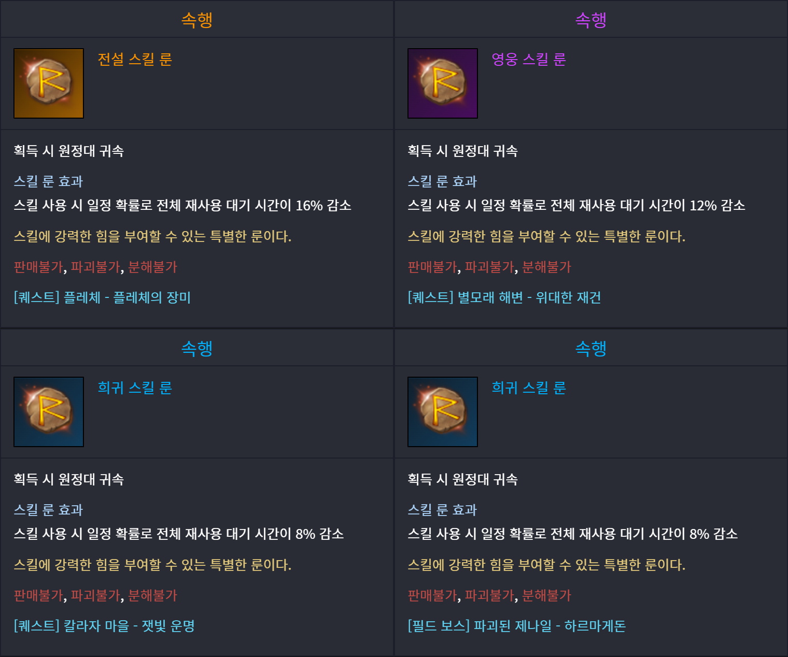
일반 퀘스트와 필드보스 보상으로 얻을 수 있습니다. 아크라시아 투어에서 받지 못한게 있다면 아이템 사전에서 검색해서 진행해주시면 되겠습니다.
나머지 룬은 중요한 룬은 아닙니다. 필요하시면 도감에서 획득 정보 확인하셔서 습득하시면 되겠습니다.
카드
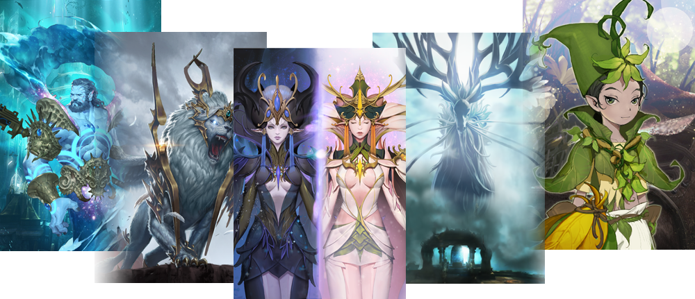
카드는 사실 굉장히 큰 내실 요소이지만 시간이 오래 걸립니다. 과금을 해서 시간을 많이 줄일 수는 있지만 굉장히 비효율적입니다.
익스프레스에서 세구빛을 지원해 주기 전에는 세구빛 30각을 빠르게 맞춰야 해서 내실 우선 순위가 높았지만 익스프레스에서 세구빛 30각을 지원해준 이후로는 내실로 카드를 우선할 필요가 없어졌습니다.
어차피 카드는 계속 완화하니까 천천히 하시면 됩니다.
카드는 2가지 효과가 있습니다.
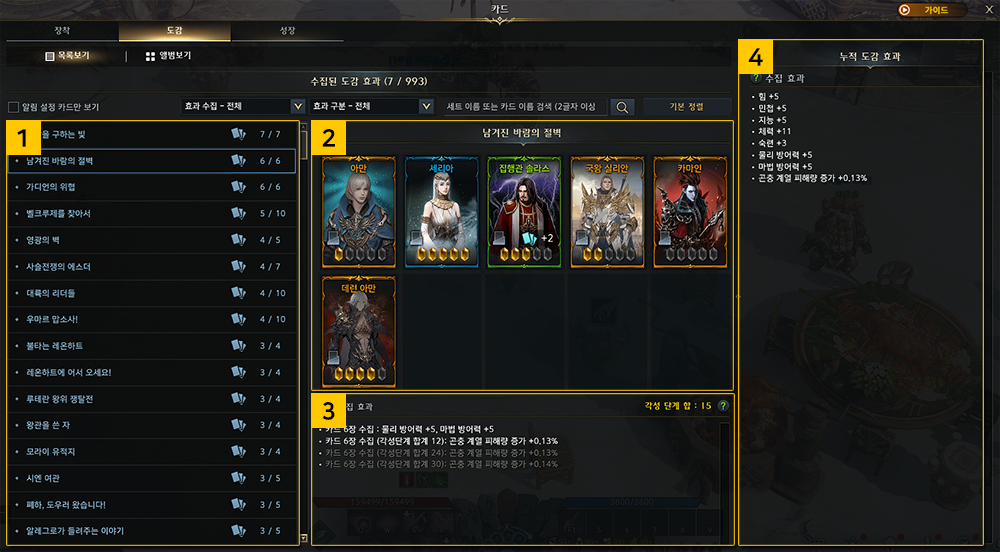
수집 효과 카드를 수집하여 도감을 완성했을 때 얻는 효과입니다. 4번에 누적 도감 효과를 보시면 됩니다.
수집 효과는 모든 카드를 5각성을 해야 완성이 됩니다. 장착 효과가 없는 카드라도 도감에서 효과를 받기 위해 5각성을 해야한다는 의미인데 이게 뉴비들은 굉장히 어렵습니다. 카드를 모으는것 자체도 어렵고 카드 경험치 모으는것도 어렵습니다.
악마 추가 피해 같은 옵션을 먼저 하는 방법도 있지만 이것도 쉽지 않습니다. 과금을 하기엔 효율이 좋지 않고 카드는 완화를 계속하니까 천천히 하시는걸 추천드립니다.
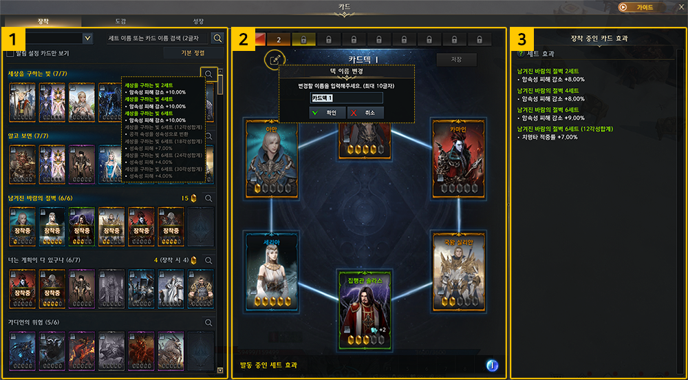
장착 효과 장착한 카드 세트에 따라 받게되는 효과입니다. 흔히 딜러들이 사용하는 세구빛 30각 효과가 여기에 해당됩니다.
익스프레스를 완료하면 세구빛 30각과 남바절 30각을 지급해주는데 세구빛이나 남바절 외에 다른 세트효과는 있으면 좋지만 없다고 게임이 불가능한 정도의 성능은 아닙니다. 이건 고인물들의 영역이고 게임 오래하면 해결되는 문제라서 이거 하겠다고 시간이랑 돈을 쓰는게 너무 비효율적입니다.
다시 얘기하지만 카드는 과금하지 말고 천천히 하는걸 추천드립니다. 어차피 나중가면 다 쓸모없는 카드 경험치일 뿐입니다.
카드 수급처 관련 내용은 앞에서 ➡️ 카드 수급처에서 설명했습니다.
펫특기
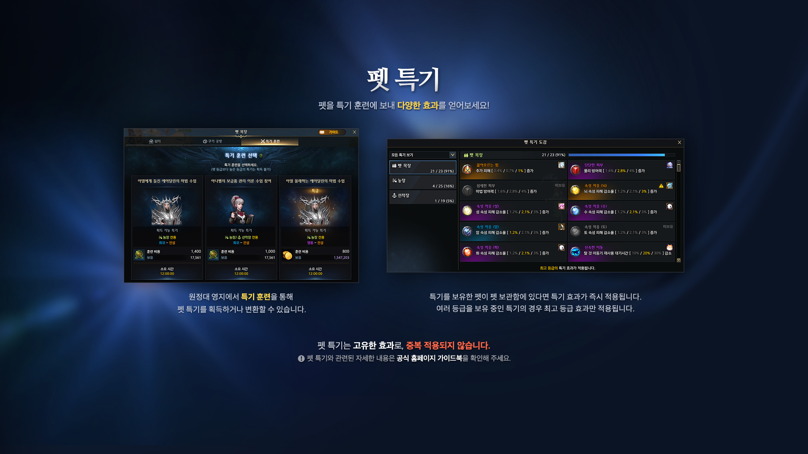
원정대 영지에서 특기 훈련을 통해 펫 특기를 습득할 수 있습니다.
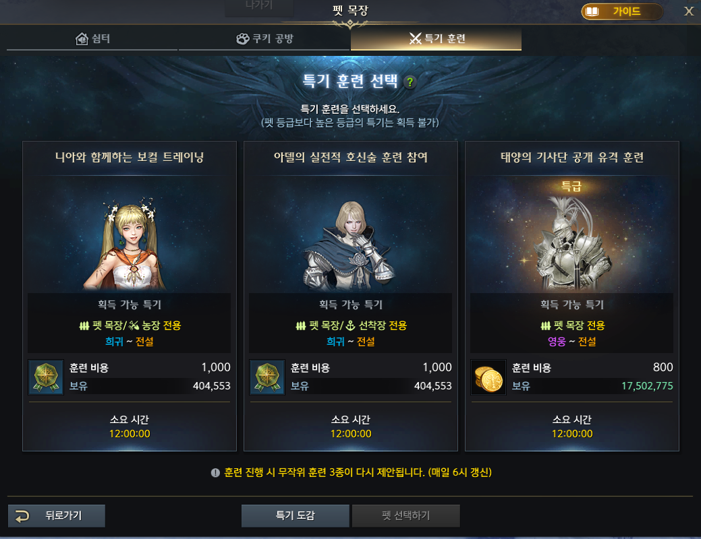
하루에 2회 특기 훈련이 가능하며 니나브의 축복 적용 시 1회 추가로 더 가능합니다.
펫 특기 중 펫 목장 관련 옵션이 스펙업과 관련된 요소이기 때문에 펫 목장 위주로 특기 훈련을 진행해주시면 됩니다.
추가 피해, 힘민지 스탯, 계열 피해량 위주로 먼저 진행해주시면 됩니다.
펫 특기는 하루 진행횟수가 정해져 있고 골드를 소비하는 특급 훈련을 하더라도 원하는 옵션이 나온다는 보장이 있는건 아니기 때문에 천천히 진행하시면 됩니다.
영구 능력치 증가 치명 / 특화 / 신속
이건 종류가 몇개 없어서 카드나 펫특기에 비해 금방 모으기 때문에 우선 순위 4위로 했습니다.
치명
가디언 토벌
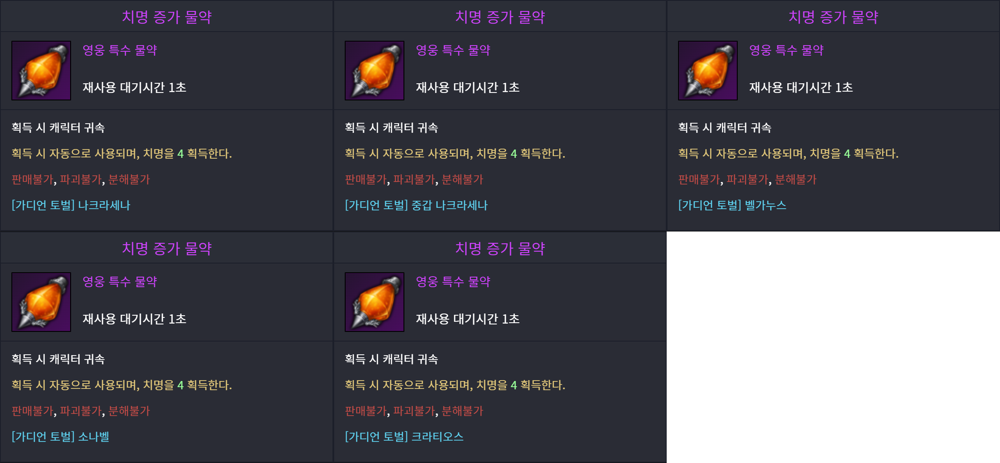
나크라세나 / 중갑 나크라세나 / 벨가누스 / 소나벨 / 크라티오스 에서 획득 가능합니다.
아제나 호감도
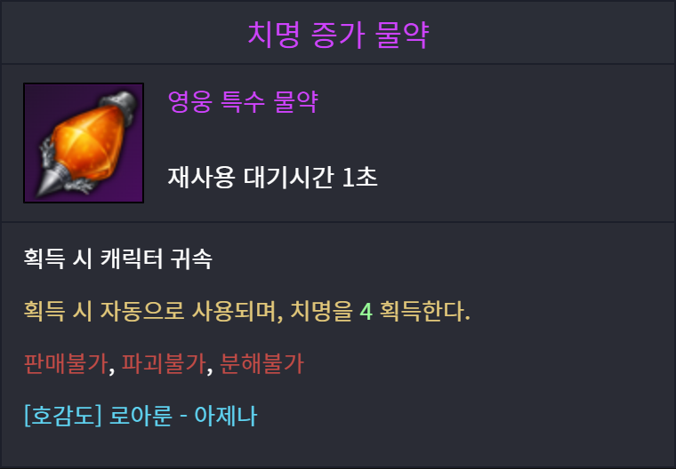
아제나 호감도 신뢰 등급 보상입니다.
평판
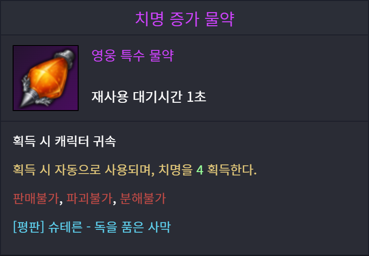
독을 품은 사막 에포나 평판보상입니다. 아크라시아 투어 보상으로 받을 수 있습니다.
퀘스트
볼다이크 퀘스트에서 획득할 수 있습니다.
특화
가디언 토벌
어둠의 레기오로스 / 베르투스 / 흑야의 요호 / 엘버하스틱 / 아카테스 / 베스칼 보상으로 획득 가능합니다.
모험의 서 쿠르잔 남부
쿠르잔 남부 모험의서 30% 보상으로 받을 수 있습니다.
퀘스트
욘 퀘스트로 받을 수 있습니다. 아크라시아 투어 완료시 지급됩니다.
신속
가디언 토벌
헬가이아 / 레바노스 / 루메루스 / 가르가디스 / 드렉탈라스 보상으로 얻을 수 있습니다.
평판
페이토와 로헨델 에포나 평판 보상으로 받을 수 있는데 두개 역시 아크라시아 투어 보상으로 받을 수 있습니다.
퀘스트
파푸니카 퀘스트로 받을 수 있습니다.
영구 능력치 증가 기본 능력치/체력
이건 획득 방식이 너무 많습니다.
원정대 레벨 / 일반 퀘스트 / 평판 / 모험의 서 / 호감도 / 모코코 씨앗 등 90개를 전부 설명하기는 어렵고 게임을 하다보면 자연스럽게 습득되니까 찾아가면서 할 필요는 없습니다.
사실 힘민지5가 큰의미가 있는건 아닙니다. 전부 모으면 힘민지 630인데 의미가 있다면 있고 없다면 없는 수치라 필수적으로 해야한다 라는건 아니니 천천히 시간날때 모아주시면 되겠습니다.
체력도 마찬가지로 다 모으면 2575인데 이것도 천천히 하셔도 됩니다.